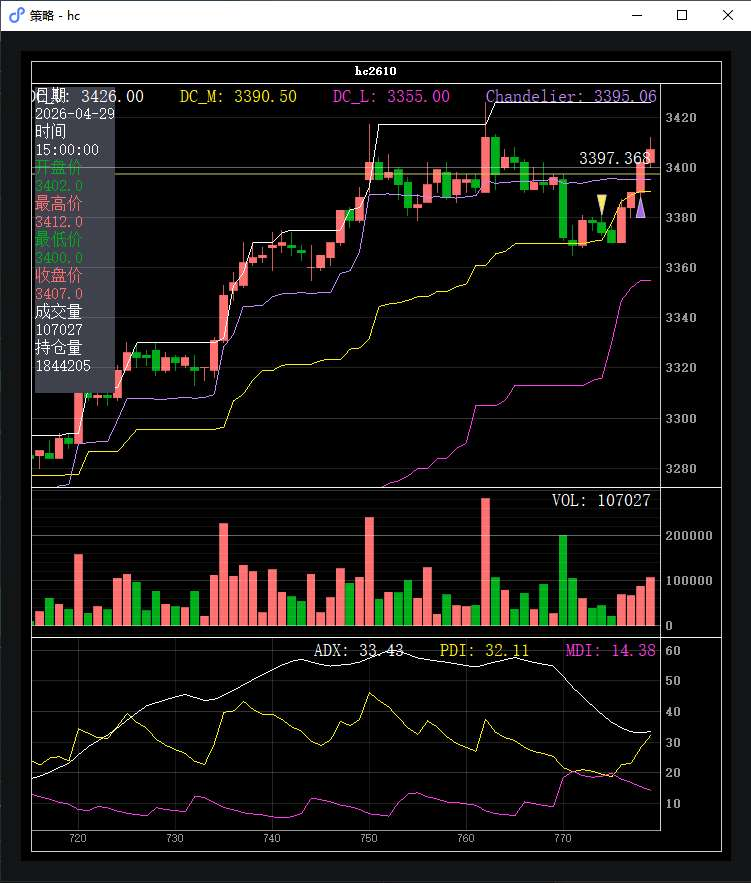
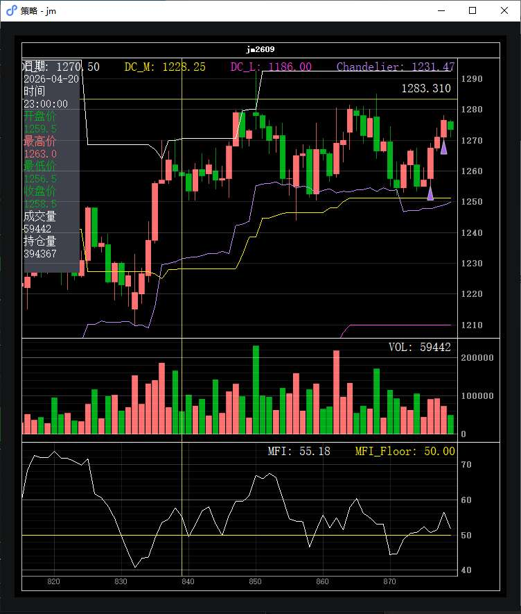
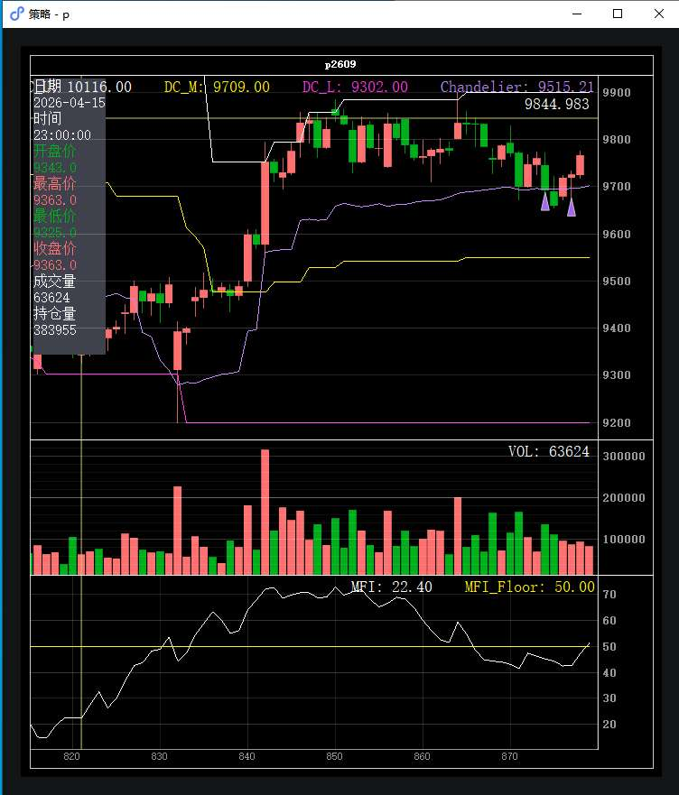
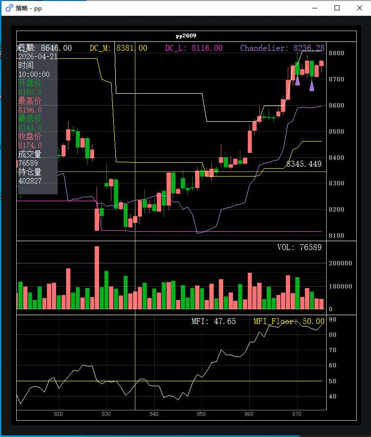

| 时间 | 品种 | 方向 | 手数 | 入场价 | 出场价 | broker盈亏 | 逐笔盈亏 | 手续费 | 净盈亏 | 状态 |
|---|---|---|---|---|---|---|---|---|---|---|
| 04-28 14:15:05 | HC | 多 | 4 | 3,379.0 (前日) | 3,374.0 | −¥240.00 | −¥980.00 | ¥13.54 | −¥253.54 | 隔夜接管 |
| 04-28 22:00:01 | P | 多 | 1 | 9,691.0 | 9,715.0 | −¥370.00 | −¥450.00 | ¥5.04 | −¥375.04 | 已平仓 |
| 04-28 22:00:06 | PP | 多 | 4 | 8,723.0 | 8,727.0 | ¥1,475.00 | ¥2,240.00 | ¥8.10 | ¥1,466.90 | 已平仓 |
| 04-28 22:49:59 | P | 多 | 1 | — | 9,691.0 | −¥610.00 | −¥100.00 | ¥2.52 | −¥612.52 | 隔夜接管 |
| 04-29 09:00:55 | P | 多 | 1 | 9,676.0 | 9,739.0 | ¥175.00 | ¥200.00 | ¥5.04 | ¥169.97 | 已平仓 |
| 04-29 10:00:03 | JM | 多 | 1 | 1,267.5 | 1,269.0 | ¥270.00 | −¥690.00 | ¥15.25 | ¥254.75 | 已平仓 |
| 04-29 11:15:00 | P | 多 | 1 | 9,724.0 | 9,739.0 | ¥175.00 | ¥200.00 | ¥5.03 | ¥169.97 | 已平仓 |
| 04-29 11:15:00 | P | 多 | 1 | 9,724.0 | — | — | — | ¥5.03 | ¥0.00 | 持有中 |
| 04-29 11:15:05 | PP | 多 | 4 | 8,710.0 | 8,732.0 | ¥245.00 | ¥245.00 | ¥8.10 | ¥236.90 | 已平仓 |
| 04-29 14:15:05 | JM | 多 | 3 | 1,276.0 | 1,271.0 | ¥990.00 | ¥150.00 | ¥45.93 | ¥944.07 | 已平仓 |
| 04-29 14:15:05 | HC | 多 | 4 | 3,403.0 | — | — | — | ¥13.66 | ¥0.00 | 持有中 |
通常由 OrderMonitor escalator 触发: 挂单超时未成 → 撤单 → 重发新价位.
| 报单时间 | 品种 | 方向 | 开平 | 报价 | 手数 | 状态 |
|---|---|---|---|---|---|---|
| 04-28 22:00:01 | PP | 买 | 开仓 | 8,718.0 | 4 | 撤单 |
| 04-29 14:15:00 | HC | 买 | 开仓 | 3,401.0 | 4 | 撤单 |

当日 HC 主力合约整体上涨 +0.83% — 窗口起点 ¥3374.0, 最高 ¥3402.0, 最低 ¥3374.0, 收盘 ¥3402.0 (波动幅度 0.83%).
收盘指标: ADX=33.1 (强趋势, 阈值 22), PDI=28.2 > MDI=15.5 (多头主导); Donchian 通道 3355.0 ~ 3426.0, 中轨 3390.5.
开仓 (前日接管): 04-28 14:15:05 买入 4 手 @ ¥3379.0 (state.json 自昨日恢复 own_pos)
当时仓位决策: 原始信号 raw=5.00 → Carver vol target 算出 5 手 (ATR=13.2) → 目标 4 手, 当时已持 0 手.
当时信号 (V8 Donchian+ADX): close=3379.0, Donchian 上轨=3426.0, 中轨=3369.5; ADX=44.8, PDI=21.1 > MDI=19.1 — 趋势确认 ✓
平仓时间: 22:00:02 · 卖出 4 手 @ ¥3374.0
触发条件: 隔夜接管的持仓在新窗口内被平仓 — 可能是策略启动后立即触发的移动止损 / 硬止损 / 信号反转.
盈亏: broker 平仓盈亏 −¥240.00, 逐笔 −¥980.00, 手续费 ¥13.54
开仓时间: 14:15:05 · 买入 4 手 @ ¥3403.0
仓位决策: 原始信号强度 raw=5.00 → Carver vol target 算出 5 手 (ATR=12.2, 资金 ¥1,000,000) → apply_buffer 后目标 4 手, 当时已持 0 手.
信号详情 (V8 Donchian+ADX): close=3402.0, Donchian 上轨=3426.0, 中轨=3390.5; ADX=33.1 (阈值 22), PDI=28.2 > MDI=15.5 — 趋势确认 ✓
当前状态: 持仓中, 未触发平仓信号, 持有 4 手 @ ¥3403.0 过夜.

当日 JM 主力合约整体上涨 +1.71% — 窗口起点 ¥1255.0, 最高 ¥1276.5, 最低 ¥1255.0, 收盘 ¥1276.5 (波动幅度 1.71%).
收盘指标: MFI=56.6 (资金流入强, 阈值 50); Donchian 通道 1210.0 ~ 1292.5, 中轨 1251.2.
开仓时间: 10:00:03 · 买入 1 手 @ ¥1267.5
仓位决策: 原始信号强度 raw=1.91 → Carver vol target 算出 2 手 (ATR=12.2, 资金 ¥1,000,000) → apply_buffer 后目标 1 手, 当时已持 0 手.
信号详情 (V13 Donchian+MFI): close=1267.5, Donchian 上轨=1292.5, 中轨=1251.2; MFI=50.7 (阈值 50) — 资金确认 ✓
平仓时间: 10:33:59 · 卖出 1 手 @ ¥1269.0 (报价 ¥1266.5, 滑点 -5.0 跳)
触发条件: (未捕获到 EXEC_STOP / TRAIL_STOP 日志). broker 平仓盈亏 (¥270.00) 与当日 round-trip 的毛盈亏 (¥90.00) 差异较大, 可能实际平的是隔夜接管的持仓 (state.json 自昨日恢复, CSV 不可见).
盈亏: broker 平仓盈亏 ¥270.00, 逐笔 −¥690.00, 手续费 ¥15.25
开仓时间: 14:15:05 · 买入 3 手 @ ¥1276.0
仓位决策: 原始信号强度 raw=3.53 → Carver vol target 算出 4 手 (ATR=11.6, 资金 ¥1,000,000) → apply_buffer 后目标 3 手, 当时已持 0 手.
信号详情 (V13 Donchian+MFI): close=1276.5, Donchian 上轨=1292.5, 中轨=1251.2; MFI=56.6 (阈值 50) — 资金确认 ✓
平仓时间: 14:25:59 · 卖出 3 手 @ ¥1271.0 (报价 ¥1268.5, 滑点 -5.0 跳)
触发条件: 移动止损 — 当前价 ¥1269.0 ≤ 移损线 ¥1269.2 (peak × (1 - trailing_pct%) 公式生成)
盈亏: broker 平仓盈亏 ¥990.00, 逐笔 ¥150.00, 手续费 ¥45.93

当日 P 主力合约整体上涨 +0.34% — 窗口起点 ¥9692.0, 最高 ¥9725.0, 最低 ¥9692.0, 收盘 ¥9725.0 (波动幅度 0.34%).
收盘指标: MFI=42.5 (资金流出, 阈值 50); Donchian 通道 9200.0 ~ 9900.0, 中轨 9550.0.
开仓时间: 22:00:01 · 买入 1 手 @ ¥9691.0
仓位决策: 原始信号强度 raw=2.09 → Carver vol target 算出 2 手 (ATR=67.4, 资金 ¥1,000,000) → apply_buffer 后目标 1 手, 当时已持 0 手.
信号详情 (V13 Donchian+MFI): close=9692.0, Donchian 上轨=9900.0, 中轨=9550.0; MFI=45.2 (阈值 50) — 资金确认 △
平仓时间: 22:16:29 · 卖出 1 手 @ ¥9715.0
触发条件: (未捕获到 EXEC_STOP / TRAIL_STOP 日志). broker 平仓盈亏 (−¥370.00) 与当日 round-trip 的毛盈亏 (¥240.00) 差异较大, 可能实际平的是隔夜接管的持仓 (state.json 自昨日恢复, CSV 不可见).
盈亏: broker 平仓盈亏 −¥370.00, 逐笔 −¥450.00, 手续费 ¥5.04
开仓: 隔夜接管的持仓 — 入场价不可见 (前日 CSV 缺失, state.json 自昨日恢复 own_pos)
平仓时间: 22:49:59 · 卖出 1 手 @ ¥9691.0 (报价 ¥9681.0, 滑点 -5.0 跳)
触发条件: 隔夜接管的持仓在新窗口内被平仓 — 可能是策略启动后立即触发的移动止损 / 硬止损 / 信号反转.
盈亏: broker 平仓盈亏 −¥610.00, 逐笔 −¥100.00, 手续费 ¥2.52
开仓时间: 09:00:55 · 买入 1 手 @ ¥9676.0 (报价 ¥9677.0, 滑 -0.5 跳)
仓位决策: 原始信号强度 raw=2.09 → Carver vol target 算出 2 手 (ATR=67.4, 资金 ¥1,000,000) → apply_buffer 后目标 1 手, 当时已持 0 手.
信号详情 (V13 Donchian+MFI): close=9692.0, Donchian 上轨=9900.0, 中轨=9550.0; MFI=45.2 (阈值 50) — 资金确认 △
平仓时间: 13:43:59 · 卖出 1 手 @ ¥9739.0 (报价 ¥9729.0, 滑点 -5.0 跳)
触发条件: 移动止损 — 当前价 ¥9691.0 ≤ 移损线 ¥9692.8 (peak × (1 - trailing_pct%) 公式生成)
盈亏: broker 平仓盈亏 ¥175.00, 逐笔 ¥200.00, 手续费 ¥5.04
开仓时间: 11:15:00 · 买入 1 手 @ ¥9724.0
仓位决策: 原始信号强度 raw=2.61 → Carver vol target 算出 3 手 (ATR=66.4, 资金 ¥1,000,000) → apply_buffer 后目标 2 手, 当时已持 0 手.
信号详情 (V13 Donchian+MFI): close=9725.0, Donchian 上轨=9900.0, 中轨=9550.0; MFI=42.5 (阈值 50) — 资金确认 △
平仓时间: 13:43:59 · 卖出 1 手 @ ¥9739.0 (报价 ¥9729.0, 滑点 -5.0 跳)
触发条件: 移动止损 — 当前价 ¥9691.0 ≤ 移损线 ¥9692.8 (peak × (1 - trailing_pct%) 公式生成)
盈亏: broker 平仓盈亏 ¥175.00, 逐笔 ¥200.00, 手续费 ¥5.03
开仓时间: 11:15:00 · 买入 1 手 @ ¥9724.0
仓位决策: 原始信号强度 raw=2.61 → Carver vol target 算出 3 手 (ATR=66.4, 资金 ¥1,000,000) → apply_buffer 后目标 2 手, 当时已持 0 手.
信号详情 (V13 Donchian+MFI): close=9725.0, Donchian 上轨=9900.0, 中轨=9550.0; MFI=42.5 (阈值 50) — 资金确认 △
当前状态: 持仓中, 未触发平仓信号, 持有 1 手 @ ¥9724.0 过夜.

当日 PP 主力合约整体上涨 +0.40% — 窗口起点 ¥8718.0, 最高 ¥8753.0, 最低 ¥8711.0, 收盘 ¥8753.0 (波动幅度 0.48%).
收盘指标: MFI=83.1 (资金流入强, 阈值 50); Donchian 通道 8116.0 ~ 8809.0, 中轨 8462.5.
开仓时间: 22:00:06 · 买入 4 手 @ ¥8723.0
仓位决策: 原始信号强度 raw=5.00 → Carver vol target 算出 5 手 (ATR=68.7, 资金 ¥1,000,000) → apply_buffer 后目标 4 手, 当时已持 0 手.
信号详情 (V13 Donchian+MFI): close=8718.0, Donchian 上轨=8758.0, 中轨=8437.0; MFI=88.7 (阈值 50) — 资金确认 ✓
平仓时间: 09:00:29 · 卖出 4 手 @ ¥8727.0 (报价 ¥8722.0, 滑点 -5.0 跳)
触发条件: (未捕获到 EXEC_STOP / TRAIL_STOP 日志). broker 平仓盈亏 (¥1,475.00) 与当日 round-trip 的毛盈亏 (¥80.00) 差异较大, 可能实际平的是隔夜接管的持仓 (state.json 自昨日恢复, CSV 不可见).
盈亏: broker 平仓盈亏 ¥1,475.00, 逐笔 ¥2,240.00, 手续费 ¥8.10
开仓时间: 11:15:05 · 买入 4 手 @ ¥8710.0
仓位决策: 原始信号强度 raw=5.00 → Carver vol target 算出 5 手 (ATR=69.3, 资金 ¥1,000,000) → apply_buffer 后目标 4 手, 当时已持 0 手.
信号详情 (V13 Donchian+MFI): close=8711.0, Donchian 上轨=8809.0, 中轨=8462.5; MFI=83.9 (阈值 50) — 资金确认 ✓
平仓时间: 14:21:59 · 卖出 4 手 @ ¥8732.0 (报价 ¥8727.0, 滑点 -5.0 跳)
触发条件: 移动止损 — 当前价 ¥8729.0 ≤ 移损线 ¥8732.7 (peak × (1 - trailing_pct%) 公式生成)
盈亏: broker 平仓盈亏 ¥245.00, 逐笔 ¥245.00, 手续费 ¥8.10